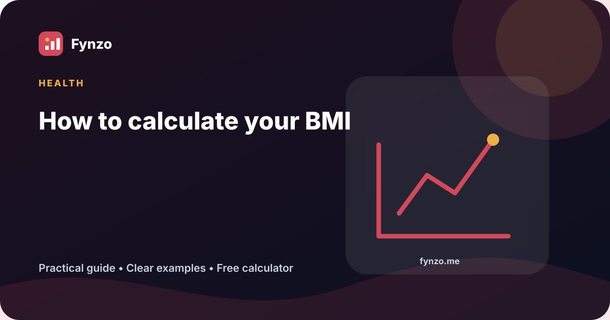

How to calculate your BMI

BMI is a quick screening calculation based on height and weight. It is useful when interpreted carefully, but it is not a diagnosis or a direct measurement of body fat.
Start with the idea
Body mass index compares weight with height. For adults, it can provide a consistent starting point for discussing weight categories and changes over time.
The metric formula is BMI = weight in kilograms ÷ height in metres squared. For imperial units, BMI = 703 × weight in pounds ÷ height in inches squared.
Worked example
A person weighs 72 kg and is 1.75 m tall. Square the height: 1.75 × 1.75 = 3.0625. Divide 72 by 3.0625. The result is 23.5.
For adults, 23.5 sits in the CDC healthy-weight screening range of 18.5 to less than 25. That category is context, not a medical conclusion.
Quick reference
| Item | Meaning |
|---|---|
| Less than 18.5 | Underweight |
| 18.5 to <25 | Healthy weight |
| 25 to <30 | Overweight |
| 30 or higher | Obesity |
Common mistakes
- Using centimetres without converting height to metres
- Applying adult categories to children or teenagers
- Assuming BMI can separate muscle, fat and bone
- Treating one result as a diagnosis
Practical steps
- Measure weight and height under consistent conditions.
- Calculate BMI and check the adult category only if the person is 20 or older.
- Consider other information such as waist size, blood pressure, history and physical examination.
- Discuss concerns with a qualified health professional.
Run your own numbers
Use the related Fynzo tool to test different inputs and compare results.
Open the BMI Calculator →Sources and review note
This article was reviewed for language, calculation examples and source links by Yasser Chahir, Fynzo editor. Last reviewed: July 31, 2026. It is general educational information, not medical, financial, tax or legal advice.